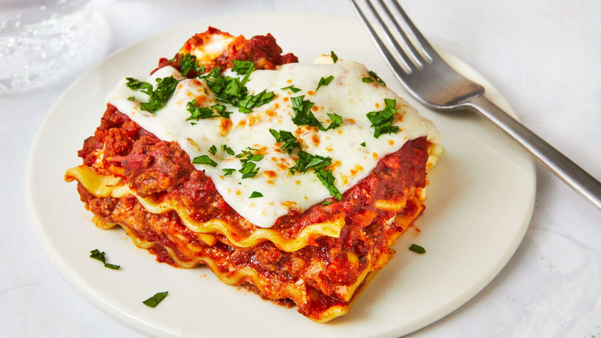

Lasagna

Description
Lasagna is a classic Italian dish made with layers of wide, flat pasta sheets, rich meat or vegetable sauce, creamy béchamel or ricotta, and melted cheese, typically mozzarella or Parmesan. Baked in the oven, the dish has a golden, bubbly top and is hearty, flavorful, and comforting.
Ingredients
- Lasagna noodles
- Ground beef or Italian sausage
- Onion (diced)
-
Garlic (minced)
- Italian seasoning (optional)
Steps
- Cook the noodles: Boil lasagna noodles according to package instructions, then drain and set aside.
- Prepare the meat sauce: In a pan, sauté diced onions and minced garlic in olive oil, add ground beef or sausage, and cook until browned. Stir in tomato sauce, crushed tomatoes, and seasonings, then simmer for 15-20 minutes.
- Mix the ricotta: In a bowl, combine ricotta cheese, egg, and chopped parsley or basil, then season with salt and pepper.
- Layer the lasagna: In a baking dish, spread a thin layer of meat sauce, add a layer of noodles, then spread ricotta mixture on top. Sprinkle with shredded mozzarella and repeat layers, ending with sauce and cheese.
-
Bake: Cover with foil and bake at 375°F (190°C) for 25-30 minutes, then uncover and bake for an additional 10-15 minutes until the top is golden and bubbly. Let it rest before serving.